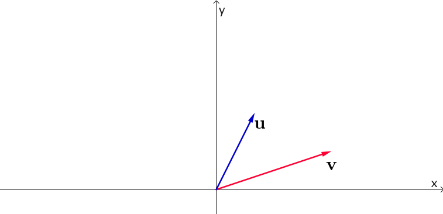
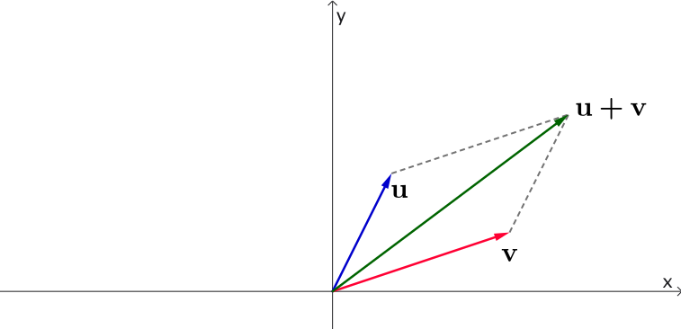
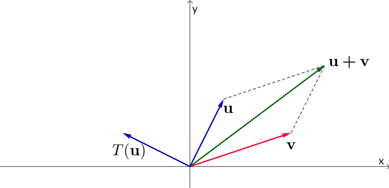
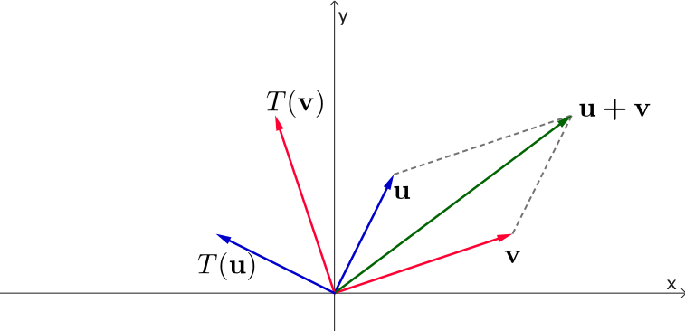
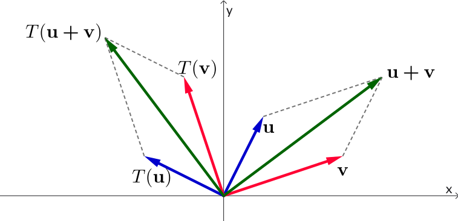
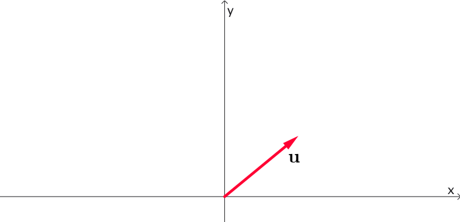
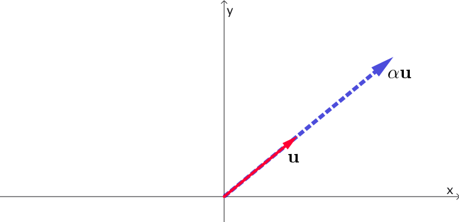
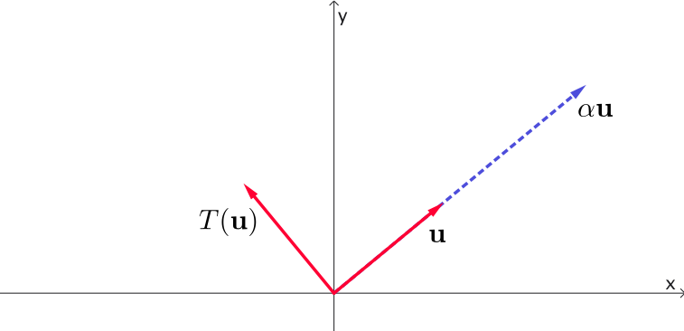
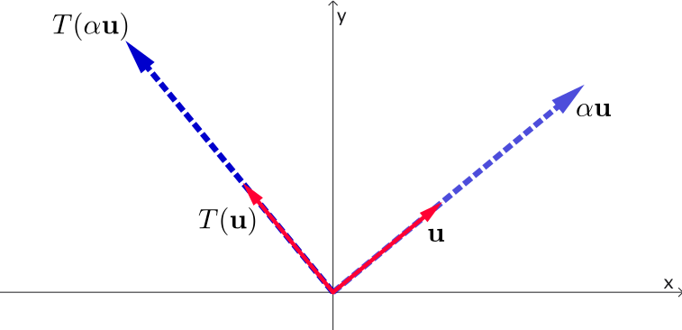

Linear Algebra & Applications
2201NSC
Linear Transformations

Linear Transformations
Consider the mapping (transformation) from $\mathbb{R}^2 \mapsto \mathbb{R}^2$, given by:
$(x,y) \mapsto (-y,x)$
This mapping rotates vectors through an angle of $90^{\circ}$ (anticlockwise).
Linear Transformations
Definition
A mapping $T$ from a vector space $V$ into a vector space $W$ (written $T:V \rightarrow W$) is said to be a linear transformation if for all $\mathbf{u}, \mathbf{v} \in V$ and $\alpha, \beta \in \mathbb{R}$:
$T(\mathbf{u}+\mathbf{v}) = T(\mathbf{u}) + T(\mathbf{v})\quad$ and $\quad T(\alpha \mathbf{u}) = \alpha T(\mathbf{u})$
or equivalently:
Example of a Linear Transformation (1)
Suppose $T$ is an anti-clockwise rotation by $90^{\circ}$ in the $xy$-plane.





Geometrically, we can see that the diagonal of the sum vector parallelogram rotates along with its components. In other words,
$T(\mathbf{u}+\mathbf{v}) = T(\mathbf{u}) + T(\mathbf{v})$
Example of a Linear Transformation (2)
Similarly, for scaling a vector by a scalar constant $\alpha$, under the same $90^{\circ}$ anti-clockwise rotation:




Therefore, $T(\alpha \mathbf{v}) = \alpha T(\mathbf{v})$ holds true.
A Mapping That is NOT a Linear Transformation
$T:\mathbb{R}^2 \rightarrow \mathbb{R}^2$ given by $T\begin{pmatrix} x \\ y \end{pmatrix} = \begin{pmatrix} x + 1 \\ y \end{pmatrix}$
Let's test with a counterexample. Say $\mathbf{u} = \begin{pmatrix} 2 \\ 1 \end{pmatrix}$ and $\mathbf{v} = \begin{pmatrix} 1 \\ 1 \end{pmatrix}$:
$\mathbf{u}+\mathbf{v} = \begin{pmatrix} 3 \\ 2 \end{pmatrix} $ $ \implies T(\mathbf{u}+\mathbf{v}) = \begin{pmatrix} 4 \\ 2 \end{pmatrix} $
But computing them individually yields:
$ T(\mathbf{u}) = \begin{pmatrix} 3 \\ 1 \end{pmatrix}, \quad T(\mathbf{v}) = \begin{pmatrix} 2 \\ 1 \end{pmatrix} $ $ \implies T(\mathbf{u}) + T(\mathbf{v}) = \begin{pmatrix} 5 \\ 2 \end{pmatrix} $
Since $T(\mathbf{u}) + T(\mathbf{v}) \neq T(\mathbf{u}+\mathbf{v})$, it is not a linear transformation.
Note: You can disprove linearity with a single counterexample. However, to prove a mapping is a linear transformation, you must show it holds in general.
Linear Transformations
Practice examples
- Show that the following mapping $T:\mathbb{R}^2 \mapsto \mathbb{R}^2$ is not linear: $$T\begin{pmatrix} x_1 \\ x_2 \end{pmatrix} = \begin{pmatrix} x_2 \\ x_1 - 1 \end{pmatrix}$$
- Determine whether the transformation $T:\mathbb{R}^2 \mapsto \mathbb{R}^3$ is linear: $$T\begin{pmatrix} x_1 \\ x_2 \end{pmatrix} = \begin{pmatrix} x_1 \\ x_2 \\ x_1^2 + x_2^2 \end{pmatrix}$$
Practice example 1
$T:\mathbb{R}^2 \rightarrow \mathbb{R}^2$ given by $ T\begin{pmatrix}x_1\\x_2\end{pmatrix} = \begin{pmatrix} x_2\\ x_1-1 \end{pmatrix} $
Let's test with a counterexample. Say $ \mathbf{u}= \begin{pmatrix}1\\0\end{pmatrix}, \;\; \mathbf{v}= \begin{pmatrix}0\\1\end{pmatrix}. $
$ \mathbf{u}+\mathbf{v} = \begin{pmatrix}1\\1\end{pmatrix} $ $ \implies T(\mathbf{u}+\mathbf{v}) = \begin{pmatrix}1\\0\end{pmatrix} $
But computing them individually yields:
$ T(\mathbf{u}) = \begin{pmatrix}0\\0\end{pmatrix}, \;\; T(\mathbf{v}) = \begin{pmatrix}1\\-1\end{pmatrix} $ $ \implies T(\mathbf{u})+T(\mathbf{v}) = \begin{pmatrix}1\\-1\end{pmatrix} $
Since $ T(\mathbf{u}+\mathbf{v}) \neq T(\mathbf{u})+T(\mathbf{v}), $ the mapping is not a linear transformation.
Note: A single counterexample is enough to disprove linearity.
Practice example 2
$T:\mathbb{R}^2 \rightarrow \mathbb{R}^3$ given by $ T\begin{pmatrix}x_1\\x_2\end{pmatrix} = \begin{pmatrix} x_1\\ x_2\\ x_1^2+x_2^2 \end{pmatrix} $
Let's test the additivity property. Take $ \mathbf{u}= \begin{pmatrix}1\\0\end{pmatrix}, \; \mathbf{v}= \begin{pmatrix}0\\1\end{pmatrix}. $
$ \mathbf{u}+\mathbf{v} = \begin{pmatrix}1\\1\end{pmatrix} $ $ \implies T(\mathbf{u}+\mathbf{v}) = \begin{pmatrix}1\\1\\2\end{pmatrix} $
Individual computation gives: $ T(\mathbf{u}) = \begin{pmatrix}1\\0\\1\end{pmatrix}, \; T(\mathbf{v}) = \begin{pmatrix}0\\1\\1\end{pmatrix} $ $ \implies T(\mathbf{u})+T(\mathbf{v}) = \begin{pmatrix}1\\1\\2\end{pmatrix} $
So, for these vectors, $ T(\mathbf{u}+\mathbf{v}) = T(\mathbf{u})+T(\mathbf{v}). $
Practice example 2
$T:\mathbb{R}^2 \rightarrow \mathbb{R}^3$ given by $ T\begin{pmatrix}x_1\\x_2\end{pmatrix} = \begin{pmatrix} x_1\\ x_2\\ x_1^2+x_2^2 \end{pmatrix} $
However, this does not prove that $T$ is linear.
The mapping is still not a linear transformation.
Why? We must also verify the homogeneity property,
$
T(c\mathbf{x}) = c\,T(\mathbf{x}),
$
which this mapping does not satisfy because of the quadratic term
$x_1^2+x_2^2$.
Proving a Mapping is a Linear Transformation
Consider another transformation on $\mathbb{R}^2$ given by $T(\mathbf{v}) = 3\mathbf{v}$. We check the core properties to confirm if $T$ is linear.
(a) Check whether $T(\mathbf{u}+\mathbf{v}) = T(\mathbf{u}) + T(\mathbf{v})$
Let $\mathbf{u} = \begin{pmatrix} u_1 \\ u_2 \end{pmatrix}$ and $\mathbf{v} = \begin{pmatrix} v_1 \\ v_2 \end{pmatrix}$, meaning $\mathbf{u}+\mathbf{v} = \begin{pmatrix} u_1 + v_1 \\ u_2 + v_2 \end{pmatrix}$:
$ T(\mathbf{u}+\mathbf{v}) = T\begin{pmatrix} u_1 + v_1 \\ u_2 + v_2 \end{pmatrix} $ $ = 3\begin{pmatrix} u_1 + v_1 \\ u_2 + v_2 \end{pmatrix} $ $ = \begin{pmatrix} 3u_1 + 3v_1 \\ 3u_2 + 3v_2 \end{pmatrix} $
$ \quad = 3\begin{pmatrix} u_1 \\ u_2 \end{pmatrix} + 3\begin{pmatrix} v_1 \\ v_2 \end{pmatrix} $ $ = T(\mathbf{u}) + T(\mathbf{v})\quad $ ✅
Proving a Mapping is a Linear Transformation
Consider another transformation on $\mathbb{R}^2$ given by $T(\mathbf{v}) = 3\mathbf{v}$. We check the core properties to confirm if $T$ is linear.
(a) Check whether $T(\mathbf{u}+\mathbf{v}) = T(\mathbf{u}) + T(\mathbf{v})$
(b) Check whether $T(\alpha \mathbf{u}) = \alpha T(\mathbf{u})$
Using the same mapping $T(\mathbf{v}) = 3\mathbf{v}$ with an arbitrary scalar $\alpha \in \mathbb{R}$:
$ T(\alpha \mathbf{u}) = T\begin{pmatrix} \alpha u_1 \\ \alpha u_2 \end{pmatrix} $ $ = 3\begin{pmatrix} \alpha u_1 \\ \alpha u_2 \end{pmatrix} $ $ = \alpha \left[ 3\begin{pmatrix} u_1 \\ u_2 \end{pmatrix} \right] $ $ = \alpha T(\mathbf{u})\quad $ ✅
Proving a Mapping is a Linear Transformation
Consider another transformation on $\mathbb{R}^2$ given by $T(\mathbf{v}) = 3\mathbf{v}$. We check the core properties to confirm if $T$ is linear.
(a) Check whether $T(\mathbf{u}+\mathbf{v}) = T(\mathbf{u}) + T(\mathbf{v})$
(b) Check whether $T(\alpha \mathbf{u}) = \alpha T(\mathbf{u})$
Both rules are satisfied!
So $T(\mathbf{v}) = 3\mathbf{v}$ is rigorously proven to be a linear transformation!
Using the Alternate Definition
Consider the mapping from $\mathbb{R}^2$ to $\mathbb{R}^3$ given by:
$ T\begin{pmatrix} x_1 \\ x_2 \end{pmatrix} = \left(x_2, x_1, x_1 + x_2\right)^T = \begin{pmatrix} x_2 \\ x_1 \\ x_1 + x_2 \end{pmatrix}$
We will show that this is linear using the single consolidated criteria: $$T\left(\alpha \mathbf{u} + \beta \mathbf{v}\right) = \alpha T(\mathbf{u}) + \beta T(\mathbf{v}).$$
Let $\mathbf{u} = \begin{pmatrix} u_1 \\ u_2 \end{pmatrix}$ and $\mathbf{v} = \begin{pmatrix} v_1 \\ v_2 \end{pmatrix}$. Then $\;\alpha \mathbf{u} + \beta \mathbf{v} = \begin{pmatrix} \alpha u_1 + \beta v_1 \\ \alpha u_2 + \beta v_2 \end{pmatrix}.$
Using the Alternate Definition
Consider the mapping from $\mathbb{R}^2$ to $\mathbb{R}^3$ given by:
$ T\begin{pmatrix} x_1 \\ x_2 \end{pmatrix} = \left(x_2, x_1, x_1 + x_2\right)^T = \begin{pmatrix} x_2 \\ x_1 \\ x_1 + x_2 \end{pmatrix}$
Thus $\alpha \mathbf{u} + \beta \mathbf{v} = \begin{pmatrix} \alpha u_1 + \beta v_1 \\ \alpha u_2 + \beta v_2 \end{pmatrix}$. Applying the rules of mapping $T$ gives:
$T(\alpha \mathbf{u} + \beta \mathbf{v}) = \begin{pmatrix} \alpha u_2 + \beta v_2 \\ \alpha u_1 + \beta v_1 \\ (\alpha u_1 + \beta v_1) + (\alpha u_2 + \beta v_2) \end{pmatrix}$ $= \begin{pmatrix} \alpha u_2 \\ \alpha u_1 \\ \alpha u_1 + \alpha u_2 \end{pmatrix} + \begin{pmatrix} \beta v_2 \\ \beta v_1 \\ \beta v_1 + \beta v_2 \end{pmatrix}$
$= \alpha \begin{pmatrix} u_2 \\ u_1 \\ u_1 + u_2 \end{pmatrix} + \beta \begin{pmatrix} v_2 \\ v_1 \\ v_1 + v_2 \end{pmatrix}$ $= \alpha T(\mathbf{u}) + \beta T(\mathbf{v})$
Exercises
- Show that the following transformation $T : \mathbb{R}^2 \rightarrow \mathbb{R}^2$ is linear: $$T\begin{pmatrix} x_1 \\ x_2 \end{pmatrix} = \begin{pmatrix} 2x_1 \\ x_2 \end{pmatrix}$$
- Show that $T : \mathbb{R}^2 \rightarrow \mathbb{R}^2$ given by the following mapping is a linear transformation: $$T\begin{pmatrix} x_1 \\ x_2 \end{pmatrix} = \begin{pmatrix} x_2 \\ 3x_1 \end{pmatrix}$$
Solution to Exercise 1
1. Consider $ T:\mathbb{R}^2\rightarrow\mathbb{R}^2, \quad T\begin{pmatrix}x_1\\x_2\end{pmatrix} = \begin{pmatrix} 2x_1\\ x_2 \end{pmatrix}. $
To prove that $T$ is linear, show that $ T(\alpha\mathbf{u}+\beta\mathbf{v}) = \alpha T(\mathbf{u}) + \beta T(\mathbf{v}) $ for all vectors $\mathbf{u},\mathbf{v}$ and scalars $\alpha,\beta$.
Let $ \mathbf{u}= \begin{pmatrix}u_1\\u_2\end{pmatrix}, \; \mathbf{v}= \begin{pmatrix}v_1\\v_2\end{pmatrix}. $ Then
$ T(\alpha\mathbf{u}+\beta\mathbf{v}) = T\!\left( \begin{pmatrix} \alpha u_1+\beta v_1\\ \alpha u_2+\beta v_2 \end{pmatrix} \right) $ $ = \begin{pmatrix} 2(\alpha u_1+\beta v_1)\\ \alpha u_2+\beta v_2 \end{pmatrix} $
$ = \alpha \begin{pmatrix} 2u_1\\ u_2 \end{pmatrix} + \beta \begin{pmatrix} 2v_1\\ v_2 \end{pmatrix} $ $ = \alpha T(\mathbf{u}) + \beta T(\mathbf{v}). $
Since this holds for all $\mathbf{u},\mathbf{v}\in\mathbb{R}^2$ and all $\alpha,\beta\in\mathbb{R}$, $T$ is a linear transformation.
If $T(\mathbf{x})$ is a Linear Transformation, $T(\mathbf{0}) = \mathbf{0}$
Theorem: For any linear transformation $T(\mathbf{x})$, $T(\mathbf{0}) = \mathbf{0}$.
Proof Outline
-
From the definition of a linear transformation,
$\alpha T(\mathbf{0}) $ $ = T(\alpha \mathbf{0})$ $= T(\mathbf{0})$
for any scalar constant $\alpha$.
- If $\alpha T(\mathbf{0}) = T(\mathbf{0})$ holds true for all $\alpha$, then $T(\mathbf{0})$ must equal $\mathbf{0}$.
Corollary: If $T(\mathbf{0}) \neq \mathbf{0}$ for any given mapping structure, it cannot be a linear transformation.
A Linear Transformation That is Not on $\mathbb{R}^n$
Consider the definite integral operator $I : C[a, b] \rightarrow \mathbb{R}$ defined by: $$I\left(f\right) = \ds \int_{a}^{b} f(t) \,dt$$
(where $C[a, b]$ represents the set of all continuous functions on the interval $[a, b]$).
Let's show that $I\left(\alpha f + \beta g\right) = \alpha I(f) + \beta I(g)$, for functions $f, g \in C[a, b]$ and constants $\alpha, \beta \in \mathbb{R}$:
$\ds I\left(\alpha f + \beta g\right) $ $\ds = \int_{a}^{b} \big[\alpha f(t) + \beta g(t)\big] \, dt$ $\ds = \alpha \int_{a}^{b} f(t) \, dt + \beta \int_{a}^{b} g(t) \, dt \quad \quad\;\; $
$\quad \ds = \alpha I(f) + \beta I(g) \quad \text{(using calculus rules of integration)}$
Thus, this calculus integration operator is a linear transformation.
Another Linear Transformation That is Not on $\mathbb{R}^n$
Consider the derivative operator $T = \dfrac{d}{dx}$ mapping $P_2 \rightarrow P_1$, where $P_n$ is the vector space of polynomials of degree $n$ or less.
$T$ acts on a polynomial to take its derivative:
$T\left(c_1 + c_2x + c_3x^2\right) $ $= \dfrac{d}{dx}\left(c_1 + c_2x + c_3x^2\right) $ $= c_2 + 2c_3x$
📝 Exercise for you:
Can you prove that this derivative operator is a linear transformation?
Hint: Set up two arbitrary general polynomials within $P_2$, say $p_1 = a_1 + a_2x + a_3x^2$ and $p_2 = c_1 + c_2x + c_3x^2$, then test the criteria.
Matrix Representation
Matrix Form of Linear Mappings
Revisiting our prior example where $T\begin{pmatrix} x_1 \\ x_2 \end{pmatrix} = \begin{pmatrix} x_2 \\ x_1 \\ x_1 + x_2 \end{pmatrix}$. Let's define matrix $A$ as:
$$A = \begin{pmatrix} 0 & 1 \\ 1 & 0 \\ 1 & 1 \end{pmatrix}$$We can rewrite the transformation cleanly as matrix multiplication:
$$T(\mathbf{x}) = \begin{pmatrix} x_2 \\ x_1 \\ x_1 + x_2 \end{pmatrix} = \begin{pmatrix} 0 & 1 \\ 1 & 0 \\ 1 & 1 \end{pmatrix} \begin{pmatrix} x_1 \\ x_2 \end{pmatrix} = A\mathbf{x}$$It is true in general that any operation defined by $T(\mathbf{x}) = A\mathbf{x}$ forms a linear transformation.
Matrix Representation
The Standard Basis
The standard basis in $\mathbb{R}^n$ is the collection of mutually orthogonal unit vectors:
$$\mathbf{e}_1 = \begin{pmatrix} 1 \\ 0 \\ \vdots \\ 0 \end{pmatrix}, \quad \mathbf{e}_2 = \begin{pmatrix} 0 \\ 1 \\ \vdots \\ 0 \end{pmatrix}, \quad \dots, \quad \mathbf{e}_n = \begin{pmatrix} 0 \\ 0 \\ \vdots \\ 1 \end{pmatrix}$$In $\mathbb{R}^2$:
$$\mathbf{i} = \mathbf{e}_1 = \begin{pmatrix} 1 \\ 0 \end{pmatrix}, \quad \mathbf{j} = \mathbf{e}_2 = \begin{pmatrix} 0 \\ 1 \end{pmatrix}$$In $\mathbb{R}^3$:
$$\mathbf{i} = \mathbf{e}_1 = \begin{pmatrix} 1 \\ 0 \\ 0 \end{pmatrix}, \quad \mathbf{j} = \mathbf{e}_2 = \begin{pmatrix} 0 \\ 1 \\ 0 \end{pmatrix}, \quad \mathbf{k} = \mathbf{e}_3 = \begin{pmatrix} 0 \\ 0 \\ 1 \end{pmatrix}$$We will look at non-standard, more general vector space bases in upcoming classes.
Matrix Representation
Matrix Representation Theorem (1)
Theorem
If $T$ is a linear transformation mapping from $\mathbb{R}^n$ into $\mathbb{R}^m$, there exists a unique $m \times n$ matrix $A$ such that $T(\mathbf{x}) = A\mathbf{x}$ for all $\mathbf{x} \in \mathbb{R}^n$.
Crucially, the $j$-th column vector of $A$ is found by transforming the standard basis element $\mathbf{e}_j$: $\mathbf{a}_j = T(\mathbf{e}_j)$ for $j = 1, 2, \dots, n$.
Proof Outline:
Let $A = \begin{pmatrix} \mathbf{a}_1 & \mathbf{a}_2 & \dots & \mathbf{a}_n \end{pmatrix}$ where $\mathbf{a}_j = T(\mathbf{e}_j)$.
Any vector $\mathbf{x} \in \mathbb{R}^n$ can be broken down as: $\mathbf{x} = x_1\mathbf{e}_1 + x_2\mathbf{e}_2 + \dots + x_n\mathbf{e}_n$
$$\implies T(\mathbf{x}) = x_1 T(\mathbf{e}_1) + x_2 T(\mathbf{e}_2) + \dots + x_n T(\mathbf{e}_n) \quad \text{(by linearity properties)}$$
$$T(\mathbf{x}) = x_1\mathbf{a}_1 + x_2\mathbf{a}_2 + \dots + x_n\mathbf{a}_n$$
Matrix Representation
Matrix Representation Theorem (2)
Proof Outline (Cont'd):
Expanding the linear combination $T(\mathbf{x}) = x_1\mathbf{a}_1 + x_2\mathbf{a}_2 + \dots + x_n\mathbf{a}_n$ into component forms:
This is exactly equivalent to the standard definition of matrix multiplication:
$$= \begin{pmatrix} a_{11} & a_{12} & \dots & a_{1n} \\ a_{21} & a_{22} & \dots & a_{2n} \\ \vdots & \vdots & \ddots & \vdots \\ a_{m1} & a_{m2} & \dots & a_{mn} \end{pmatrix} \begin{pmatrix} x_1 \\ x_2 \\ \vdots \\ x_n \end{pmatrix} = A\mathbf{x}$$Matrix Representation
Example
Find the matrix representation for the linear mapping $T: \mathbb{R}^3 \rightarrow \mathbb{R}^2$ given by $T(\mathbf{x}) = (x_1 + x_2, x_2 + x_3)^T$ where $\mathbf{x} = (x_1, x_2, x_3)^T$:
We evaluate $T$ for each element of the standard basis of $\mathbb{R}^3$:
Stacking these results into columns yields the transformation matrix $A$:
$$A = \begin{pmatrix} 1 & 1 & 0 \\ 0 & 1 & 1 \end{pmatrix}$$2D Rotation and Reflection Matrices
Geometric Interpretation
Suppose you are given the transformation matrix $A = \begin{pmatrix} 1 & 0 \\ 0 & -1 \end{pmatrix}$. How would you describe the operation $T(\mathbf{v}) = A\mathbf{v}$ geometrically?
Hint: Use a general vector $\mathbf{v} = \begin{pmatrix} v_1 \\ v_2 \end{pmatrix}$ and calculate the output:
$$T(\mathbf{v}) = A\mathbf{v} = \begin{pmatrix} 1 & 0 \\ 0 & -1 \end{pmatrix}\begin{pmatrix} v_1 \\ v_2 \end{pmatrix} = \begin{pmatrix} v_1 \\ -v_2 \end{pmatrix}$$Conclusion: This transformation reflects points across the horizontal $x$-axis.
Now try it yourself: What matrix transformation occurs if $A = \begin{pmatrix} -1 & 0 \\ 0 & 1 \end{pmatrix}$?
2D Rotation and Reflection Matrices
Reflection in the $x$-axis
When coordinates are reflected across the $x$-axis, the mappings translate as follows:
$$\begin{pmatrix} x \\ y \end{pmatrix} \mapsto \begin{pmatrix} x \\ -y \end{pmatrix}$$Tracing the transformation of standard basis vectors:
$$\mathbf{e}_1 = \begin{pmatrix} 1 \\ 0 \end{pmatrix} \mapsto \begin{pmatrix} 1 \\ 0 \end{pmatrix} \quad \text{and} \quad \mathbf{e}_2 = \begin{pmatrix} 0 \\ 1 \end{pmatrix} \mapsto \begin{pmatrix} 0 \\ -1 \end{pmatrix}$$Assembling these vectors into columns gives the transformation matrix:
$$A = \begin{pmatrix} 1 & 0 \\ 0 & -1 \end{pmatrix}$$2D Rotation and Reflection Matrices
Reflection in the $y$-axis
When coordinates are instead reflected across the vertical $y$-axis, the mappings change to:
$$\begin{pmatrix} x \\ y \end{pmatrix} \mapsto \begin{pmatrix} -x \\ y \end{pmatrix}$$Tracing the transformation of standard basis vectors:
$$\mathbf{e}_1 = \begin{pmatrix} 1 \\ 0 \end{pmatrix} \mapsto \begin{pmatrix} -1 \\ 0 \end{pmatrix} \quad \text{and} \quad \mathbf{e}_2 = \begin{pmatrix} 0 \\ 1 \end{pmatrix} \mapsto \begin{pmatrix} 0 \\ 1 \end{pmatrix}$$Grouping columns together produces the canonical matrix:
$$A = \begin{pmatrix} -1 & 0 \\ 0 & 1 \end{pmatrix}$$2D Rotation and Reflection Matrices
Rotation through an Angle $\theta$
To rotate the standard 2D axes counterclockwise by a generic angle $\theta$:
- The vector $\mathbf{e}_1 = \begin{pmatrix} 1 \\ 0 \end{pmatrix}$ moves onto unit circle coords: $\begin{pmatrix} \cos\theta \\ \sin\theta \end{pmatrix}$
- The vector $\mathbf{e}_2 = \begin{pmatrix} 0 \\ 1 \end{pmatrix}$ moves onto perpendicular coords: $\begin{pmatrix} -\sin\theta \\ \cos\theta \end{pmatrix}$
Combining these columns yields the fundamental 2D rotation matrix:
$$A = \begin{pmatrix} \cos\theta & -\sin\theta \\ \sin\theta & \cos\theta \end{pmatrix}$$2D Rotation and Reflection Matrices
Class Examples
- For instance, a pure $90^{\circ}$ anti-clockwise rotation sets $\theta = 90^{\circ}$: $$A = \begin{pmatrix} \cos 90^{\circ} & -\sin 90^{\circ} \\ \sin 90^{\circ} & \cos 90^{\circ} \end{pmatrix} = \begin{pmatrix} 0 & -1 \\ 1 & 0 \end{pmatrix} \implies \begin{pmatrix} 0 & -1 \\ 1 & 0 \end{pmatrix}\begin{pmatrix} x \\ y \end{pmatrix} = \begin{pmatrix} -y \\ x \end{pmatrix}$$
- Find the standard matrix representation of a
transformation $T$ that:
- Rotates each vector $\mathbf{x} \in \mathbb{R}^2$ by $60^{\circ}$ in the anti-clockwise direction.
- Reflects each vector $\mathbf{x} \in \mathbb{R}^2$ across the $y$-axis.
- Reflects each vector $\mathbf{x} \in \mathbb{R}^2$ across the $y$-axis and then rotates it $60^{\circ}$ anti-clockwise.
- Doubles the length of each vector $\mathbf{x} \in \mathbb{R}^2$ and then rotates it $30^{\circ}$ clockwise.